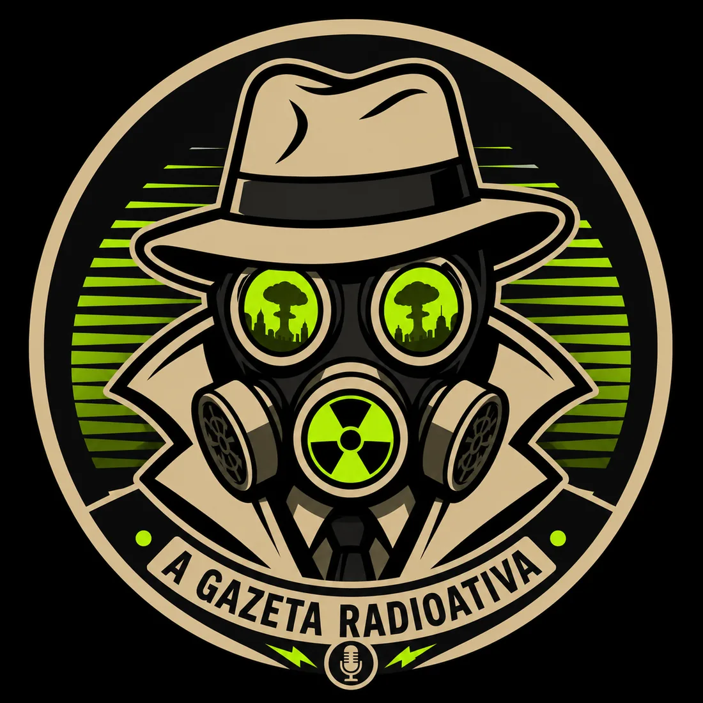

Dossiê Secreto
Todo trailer precisa esconder uma conspiração?

Antes a gente assistia ao trailer. Hoje a gente investiga o trailer. Pausa, volta, amplia o reflexo no capacete do vilão e pronto: nasce uma teoria que vai sobreviver meses até a estreia provar que era só um reflexo mesmo.
De prévia a quebra-cabeça
O trailer deixou de ser um aperitivo e virou um enigma proposital. Os estúdios aprenderam que dois segundos misteriosos rendem mais conversa do que a sinopse inteira. Esconder informação virou estratégia de marketing — e o público, com razão, virou detetive.
O easter egg, que antes era um carinho para o fã atento, virou moeda. Cada símbolo no fundo do plano é tratado como pista plantada, mesmo quando é só um adereço que o diretor de arte achou bonito.
A ansiedade como espetáculo
O lado sombrio é que a expectativa virou um produto à parte. A gente consome a teoria, depois consome a refutação da teoria, depois consome a reação à refutação — tudo antes de ver um único minuto da obra real.
“Quando todo frame é uma pista, o filme inteiro vira nota de rodapé da própria campanha.”
Veredito da redação
Teorizar é parte da diversão, e a Gazeta é suspeita para falar — adora um dossiê. Mas vale lembrar que nem todo mistério é conspiração: às vezes o trailer esconde algo só porque a obra ainda merece ser descoberta no escuro da sala. Desconfie das pistas. Desconfie mais ainda de quem promete que decifrou todas.